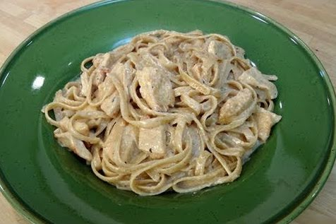

Fettucine Alfredo Recipe

Description
Fettucine Alfredo is a pasta dish with a creamy butter sauce infused with vegetarian parmesan reggano cheese straight from 200 IQ top of the line Bovine vegetarian Kobe Beef
Ingredients
- 8 oz Fettuccine
- 2 Thin Pieces of Chicken Cutlets
- 1 tsp Granulated Garlic
- 1 tsp Granulated Onion
- Salt and Pepper to taste
- 4 Tbsp of Butter
- 1 cup Heavy Cream
- 1 cup Parmiggiano Reggiano Cheese
Steps
- Bring a large pot filled with water up to a boil and sprinkle with a generous pinch of salt. Add fettuccine and cook according to packaged directions. Drain the pasta once cooked and set aside.
- Season both sides of the chicken with the granulated garlic, onion and salt and pepper to taste.
- In a medium non stick sauté pan with high sides, over medium high heat, melt the butter. Add the seasoned chicken and cook for a few minutes on each side until golden brown and cooked through. Remove chicken from the pan and cut into bite size pieces.
- In the same pan add the heavy cream and reduce it for 5 minutes. Add the parmiggiano and stir. Season with salt and pepper to taste and add the cut chicken and drained pasta. Give everything a big toss and dig in right away!